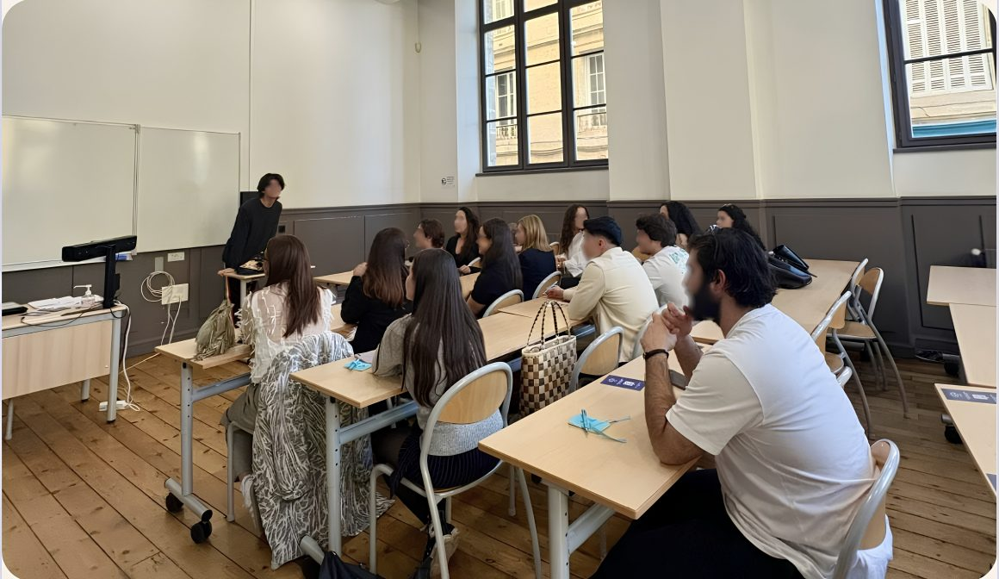
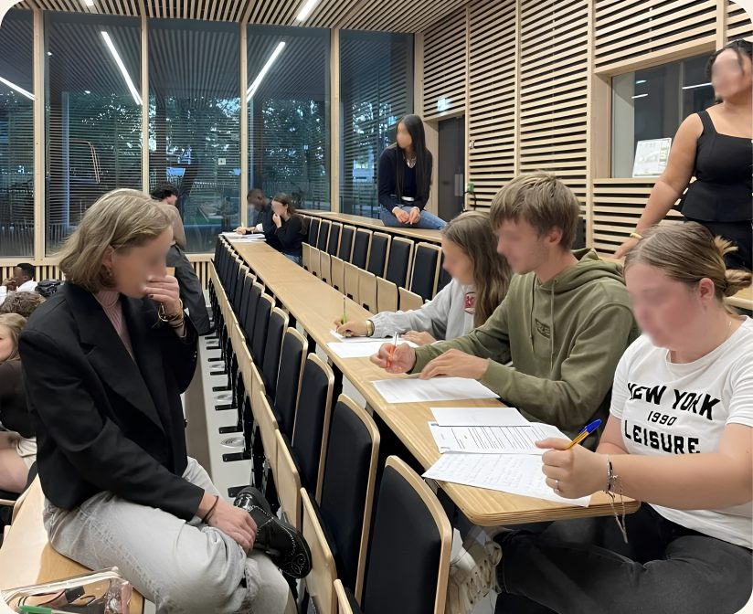

Parler des violences, c'est déjà commencer à les arrêter.
Nous concevons et animons des ateliers pour reconnaître, nommer et prévenir les violences sexistes et sexuelles.
Adaptés à chaque public, ancrés dans le concret.
Un atelier, quatre temps.
Une progression pensée pour favoriser l'échange et le transmission.
Briser la glace
On installe un cadre de confiance et de non-jugement.
Nommer les violences
Définitions, mécanismes, idées reçues : on pose des mots clairs sur des réalités souvent tues.
Situations concrètes personnalisées
À partir de cas réels et de mises en situation adaptées au public, on apprend à repérer et à réagir.
Ressources & relais
On repart avec les bons réflexes et les bons contacts :
qui alerter, où trouver de l'aide.
Les synthèses scientifiques francophones, notamment celles de l'Institut national de santé publique du Québec convergent vers la même direction. Les programmes de sensibilisation améliorent nettement les connaissances, les attitudes et les réflexes de protection, et peuvent réduire plusieurs formes de victimisation sexuelle.
Mieux informées, les victimes identifient plus vite ce qu'elles ont subi et en parlent plus tôt. Un entourage formé sait également mieux les soutenir lors d'un dévoilement.
Prévenir en amont coûte moins, protège plus, et transforme les comportements en profondeur plutôt que de réparer après coup.
Sur le long terme, la sensibilisation est l'outil le plus efficace pour faire reculer les violences sexuelles.
Ce qu'en disent professionnels et étudiants.
J'ai appris à repérer des signaux que je laissais passer avant. Les mises en situation m'ont vraiment aidée à savoir quoi dire.
J'ai pu m'entraîner sur des cas concrets. Je sais maintenant comment réagir si un·e élève se confie à moi, et vers qui l'orienter.
J'ai enfin mis des mots sur le consentement, avec des exemples qui me parlent. Je regarde certaines situations différemment maintenant.
J'ai pratiqué des mises en situation qui m'ont bousculé. J'en ressors avec des repères clairs sur ce que dit la loi.
Je pensais connaître le sujet. J'ai réalisé tout ce que je laissais passer entre potes, sans même m'en rendre compte.
J'ai pu poser mes questions sans filtre. Je me sens enfin outillée pour agir si une situation se présente.
Les mises en situation m'ont permis de m'entraîner à réagir. J'en ressors plus vigilante face à ce qui m'entoure.
J'ai appris à reconnaître les signaux faibles. Je sais désormais comment signaler une situation à risque.
J'ai appris à repérer des signaux que je laissais passer avant. Les mises en situation m'ont vraiment aidée à savoir quoi dire.
J'ai pu m'entraîner sur des cas concrets. Je sais maintenant comment réagir si un·e élève se confie à moi, et vers qui l'orienter.
J'ai enfin mis des mots sur le consentement, avec des exemples qui me parlent. Je regarde certaines situations différemment maintenant.
J'ai pratiqué des mises en situation qui m'ont bousculé. J'en ressors avec des repères clairs sur ce que dit la loi.
Je pensais connaître le sujet. J'ai réalisé tout ce que je laissais passer entre potes, sans même m'en rendre compte.
J'ai pu poser mes questions sans filtre. Je me sens enfin outillée pour agir si une situation se présente.
Les mises en situation m'ont permis de m'entraîner à réagir. J'en ressors plus vigilante face à ce qui m'entoure.
J'ai appris à reconnaître les signaux faibles. Je sais désormais comment signaler une situation à risque.
On ne combat pas ce qu'on ne sait pas nommer.
La plupart des violences sexistes et sexuelles restent invisibles, d'abord parce qu'elles prennent naissance dans des actes et des réflexions banalisées, et ensuite parce qu'elles arrivent le plus souvent dans des milieux privés, à l'abri des regards, là où les preuves matérielles se font rares.
Sensibiliser, c'est donner à chacun·e les mots et les repères pour identifier ces violences, comprendre leurs mécanismes et savoir réagir. C'est le premier geste de prévention, et le plus puissant.
Reconnaître
Mettre des mots justes sur des situations souvent minimisées, pour ne plus les laisser passer.
Prévenir
Agir en amont, sur les comportements et les représentations, plutôt que de réparer après coup.
Protéger
Un entourage informé sait écouter, orienter et soutenir une victime sans jamais la juger.


Images prises au cours de nos ateliers de sensibilisation auprès des étudiants de l'Université de Bordeaux.
Demander une intervention
Décrivez-nous votre structure et votre besoin.
Nous revenons vers vous sous 5 jours ouvrés.
Avant de nous solliciter
Tout ce qu'il faut savoir pour organiser un atelier avec nous.
Combien de temps dure un atelier ?
Nos formats vont de 1h30 à une demi-journée, selon le public et vos objectifs. Nous calons la durée avec vous en amont.
Combien de personnes peuvent participer ?
De petits groupes d'une dizaine de personnes jusqu'à des promotions entières. Nous adaptons l'animation à la taille du groupe.
Les ateliers sont-ils payants ?
Nous étudions chaque demande au cas par cas. Nous intervenons gratuitement auprès des associations étudiantes, et nous fixons un prix avec les organismes selon le nombre d'interventions prévues et le nombre de personnes sensibilisées. Cette tarification a uniquement pour but de financer les activités d'accompagnement de l'association en lui permettant de soutenir la charge financière des victimes auprès de leurs avocats et leurs psychologues.
Où se déroulent les interventions ?
Chez vous : établissement scolaire, entreprise, collectivité… Nous nous déplaçons dans toute la région pour animer la séance sur place.
Comment réserver une intervention ?
Remplissez le formulaire de demande en haut de cette page. Nous revenons vers vous sous quelques jours pour construire ensemble la séance.